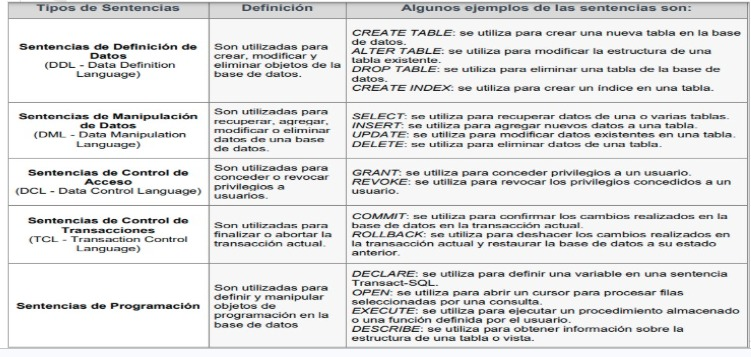

Introducción a Transact-SQL
Transact-SQL, conocido como T-SQL, es el lenguaje de programación que Microsoft creó como extensión del SQL estándar para trabajar con SQL Server. Básicamente, es SQL potenciado con esteroides: tiene todo lo que ya conocés de SQL tradicional, pero le suma un montón de funcionalidades extra que te permiten hacer cosas mucho más complejas.
Si SQL es como saber manejar un auto, T-SQL es como saber manejar un auto de Fórmula 1. Tenés todo el control básico, pero además podés ajustar mil cosas más para sacarle el máximo provecho.
¿Para qué sirve T-SQL?
Con T-SQL podés hacer prácticamente cualquier cosa relacionada con bases de datos en SQL Server:
- Crear y modificar estructuras: Tablas, vistas, índices, procedimientos almacenados, funciones
- Manipular datos: Insertar, actualizar, eliminar y consultar información
- Controlar el acceso: Definir quién puede hacer qué en la base de datos
- Programar lógica compleja: Usar variables, ciclos, condiciones, manejo de errores
- Automatizar tareas: Crear triggers (disparadores) que se ejecutan automáticamente
- Gestionar transacciones: Asegurar que las operaciones se completen correctamente o se reviertan
¿Qué hace a T-SQL diferente de SQL estándar?
SQL estándar es como el idioma base que todas las bases de datos entienden. Pero cada proveedor (Microsoft, Oracle, PostgreSQL) le agrega sus propias extensiones. T-SQL es la extensión de Microsoft para SQL Server.
Diferencias clave:
1. Variables y declaraciones
En T-SQL podés declarar variables y usarlas dentro de tus consultas:
DECLARE @edad INT;
SET @edad = 25;
SELECT * FROM Usuarios
WHERE edad > @edad;2. Estructuras de control
Podés usar IF, WHILE, CASE para crear lógica condicional:
IF (SELECT COUNT(*) FROM Usuarios) > 100
BEGIN
PRINT 'Hay más de 100 usuarios'
END
ELSE
BEGIN
PRINT 'Hay menos de 100 usuarios'
END3. Manejo de errores
T-SQL tiene un sistema robusto de manejo de errores con TRY...CATCH:
BEGIN TRY
-- Código que puede fallar
INSERT INTO Usuarios (nombre, email)
VALUES ('Juan', 'juan@example.com');
END TRY
BEGIN CATCH
-- Qué hacer si falla
PRINT 'Error: ' + ERROR_MESSAGE();
END CATCH4. Procedimientos almacenados
Podés guardar consultas complejas como "funciones reutilizables":
CREATE PROCEDURE ObtenerUsuariosPorCiudad
@ciudad VARCHAR(50)
AS
BEGIN
SELECT * FROM Usuarios
WHERE ciudad = @ciudad;
END5. Triggers (Disparadores)
Código que se ejecuta automáticamente cuando pasa algo en una tabla:
CREATE TRIGGER ActualizarFechaModificacion
ON Usuarios
AFTER UPDATE
AS
BEGIN
UPDATE Usuarios
SET fecha_modificacion = GETDATE()
WHERE id IN (SELECT id FROM inserted);
ENDTipos de Sentencias en T-SQL
T-SQL organiza sus comandos en diferentes categorías según lo que hacen. Acá te las explico todas:

1. DDL - Sentencias de Definición de Datos
Se usan para crear, modificar y eliminar la estructura de la base de datos (tablas, vistas, índices, etc.).
- CREATE: Crea un nuevo objeto (tabla, vista, procedimiento)
- ALTER: Modifica un objeto existente
- DROP: Elimina un objeto
Ejemplo:
CREATE TABLE Productos (
id INT PRIMARY KEY,
nombre VARCHAR(100),
precio DECIMAL(10,2)
);2. DML - Sentencias de Manipulación de Datos
Se usan para consultar y modificar los datos dentro de las tablas.
- SELECT: Consulta datos
- INSERT: Inserta nuevos registros
- UPDATE: Actualiza registros existentes
- DELETE: Elimina registros
Ejemplo:
INSERT INTO Productos (id, nombre, precio)
VALUES (1, 'Laptop', 800.00);3. DCL - Sentencias de Control de Datos
Se usan para controlar permisos y acceso a la base de datos.
- GRANT: Otorga permisos a usuarios
- REVOKE: Quita permisos a usuarios
Ejemplo:
GRANT SELECT ON Productos TO usuario_lectura;4. TCL - Sentencias de Control de Transacciones
Se usan para gestionar transacciones y asegurar la integridad de los datos.
- BEGIN TRANSACTION: Inicia una transacción
- COMMIT: Confirma los cambios
- ROLLBACK: Deshace los cambios
Ejemplo:
BEGIN TRANSACTION;
UPDATE Productos SET precio = precio * 1.10;
COMMIT; -- Confirma el aumento del 10%5. Sentencias de Programación
T-SQL agrega sentencias para programar lógica más compleja:
- DECLARE: Declara variables
- SET: Asigna valores a variables
- IF...ELSE: Condicionales
- WHILE: Bucles
- CASE: Evaluación de múltiples condiciones
- TRY...CATCH: Manejo de errores
Ventajas de usar T-SQL
- Potencia y flexibilidad: Podés hacer desde consultas simples hasta lógica empresarial compleja
- Rendimiento: Los procedimientos almacenados en T-SQL son pre-compilados y ejecutan más rápido
- Seguridad: Control granular sobre quién puede hacer qué
- Mantenibilidad: La lógica está centralizada en la base de datos, no dispersa en el código de la aplicación
- Reutilización: Creás funciones y procedimientos que podés usar desde cualquier aplicación
- Transacciones robustas: Manejo de errores y rollback automático si algo falla
Desventajas de T-SQL
- Específico de SQL Server: No funciona en MySQL, PostgreSQL u otras bases de datos
- Curva de aprendizaje: Más complejo que SQL básico
- Depuración: Debuggear procedimientos almacenados puede ser más difícil que código de aplicación
- Control de versiones: Más complicado versionar código en la base de datos que en Git
¿Cuándo usar T-SQL?
T-SQL es ideal para:
- Lógica de negocio en la base de datos: Validaciones, cálculos complejos, reglas empresariales
- Operaciones masivas de datos: Procesar millones de registros de forma eficiente
- Tareas programadas: Jobs que se ejecutan automáticamente (backups, limpieza de datos)
- Reportes complejos: Consultas que cruzan múltiples tablas y necesitan cálculos avanzados
- Auditoría automática: Triggers que registran cambios en las tablas
Ejemplo práctico completo
Imaginate que tenés una tienda online y querés crear un procedimiento que registre una venta:
CREATE PROCEDURE RegistrarVenta
@producto_id INT,
@cantidad INT,
@cliente_id INT
AS
BEGIN
BEGIN TRY
BEGIN TRANSACTION;
-- Verificar que hay stock
DECLARE @stock_actual INT;
SELECT @stock_actual = stock
FROM Productos
WHERE id = @producto_id;
IF @stock_actual >= @cantidad
BEGIN
-- Reducir stock
UPDATE Productos
SET stock = stock - @cantidad
WHERE id = @producto_id;
-- Registrar venta
INSERT INTO Ventas (producto_id, cantidad, cliente_id, fecha)
VALUES (@producto_id, @cantidad, @cliente_id, GETDATE());
COMMIT;
PRINT 'Venta registrada exitosamente';
END
ELSE
BEGIN
PRINT 'Stock insuficiente';
ROLLBACK;
END
END TRY
BEGIN CATCH
ROLLBACK;
PRINT 'Error: ' + ERROR_MESSAGE();
END CATCH
ENDEste procedimiento hace todo lo necesario: verifica stock, actualiza inventario, registra la venta, y si algo falla, deshace todo automáticamente.
Conclusión
T-SQL es el lenguaje que te permite aprovechar al máximo SQL Server. No es solo un lenguaje de consultas; es una herramienta completa de programación que te permite crear lógica compleja, automatizar tareas, controlar accesos y garantizar la integridad de tus datos.
Si trabajás con SQL Server, aprender T-SQL no es opcional: es esencial. Te permite ir mucho más allá de simples SELECT y construir soluciones robustas y profesionales.
En los próximos artículos vamos a profundizar en cada tipo de sentencia, los tipos de datos disponibles, y cómo crear procedimientos almacenados y triggers efectivos.